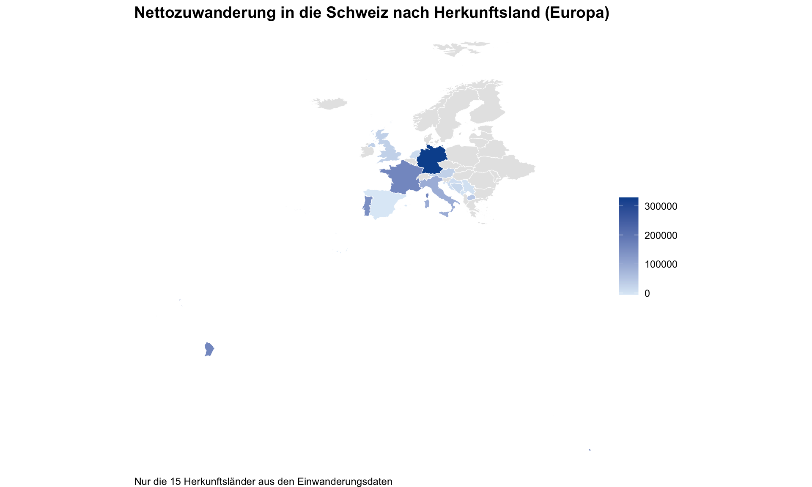
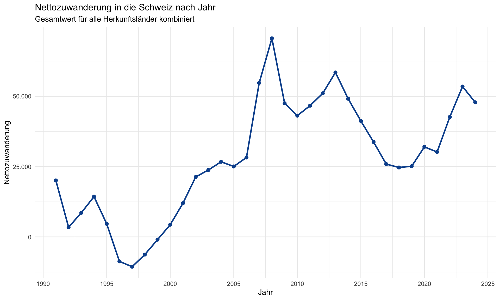
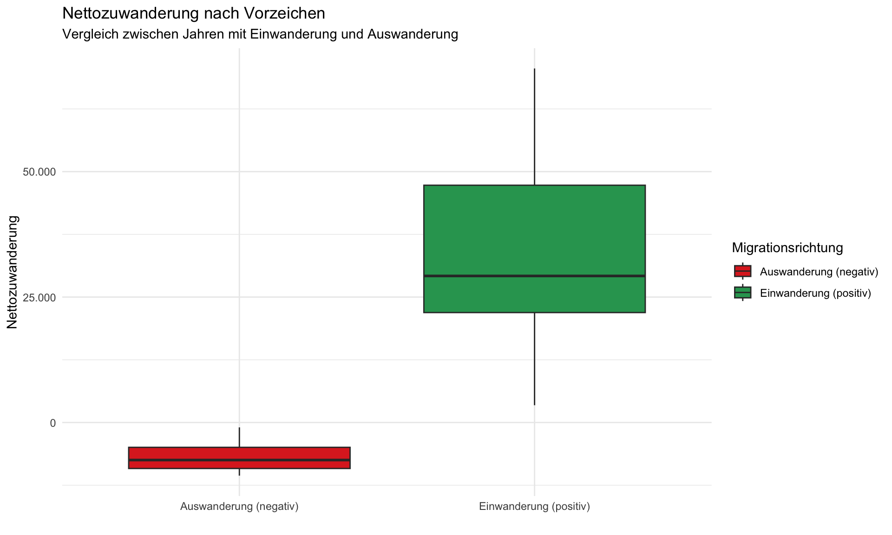
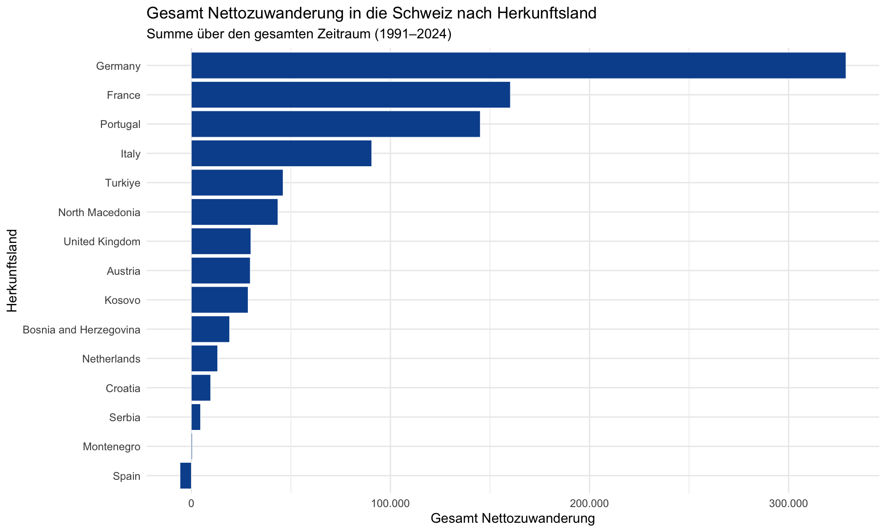

required_packages <- c(
"readr", "dplyr", "stringr", "stringi", "ggplot2",
"WDI", "rnaturalearth", "countrycode", "huxtable",
"scales", "data.table", "sf", "tibble", "broom",
"stargazer", "texreg", "tidyr", "codetools"
)
options(scipen = 999)
options(repos = c(CRAN = "https://cloud.r-project.org"))
missing_packages <- setdiff(required_packages, rownames(installed.packages()))
if (length(missing_packages) > 0) {
install.packages(missing_packages)
}
invisible(lapply(required_packages, library, character.only = TRUE))
# Arbeitsverzeichnisse definieren
paths <- c("data", "tables", "figures")
invisible(lapply(paths, function(path) {
if (!dir.exists(path)) dir.create(path, recursive = TRUE)
}))Einführung in R - Vincent Pickert
Kapitel 1 — Setup und Pakete
Kapitel 2 — Daten importieren und aufbereiten
2A — Schweizerische Einwanderungsdaten
Bei den Schweizerischen Einwanderungsdaten handelt es sich um von der BFS-Webseite manuell heruntergeladene CSV-Dateien.
RAW_swiss_immigration <- readr::read_csv(
"data/swiss_immigration_countries_year.csv",
show_col_types = FALSE
) |>
dplyr::mutate(
year = as.integer(year),
net_migration = as.numeric(net_migration)
) |>
dplyr::filter(
!origin_en %in% c(
"Afrique", "Amérique", "Asie", "Océanie",
"EFTA countries", "Yugoslavia", "Serbia and Montenegro"
),
!stringr::str_detect(origin_en, "Renseignements|Source|© OFS")
) |>
dplyr::select(origin_en, year, net_migration) |>
dplyr::arrange(origin_en, year)YEARLY_swiss_immigration <- RAW_swiss_immigration |>
dplyr::group_by(year) |>
dplyr::summarize(
net_migration = sum(net_migration, na.rm = TRUE),
mean_net_migration = mean(net_migration, na.rm = TRUE),
n_origins = dplyr::n(),
.groups = "drop"
) |>
dplyr::arrange(year)
summary(YEARLY_swiss_immigration$net_migration) Min. 1st Qu. Median Mean 3rd Qu. Max.
-10589 12555 26290 27759 45763 70558 Das Minimum von −10 589 zeigt, dass es Jahre gab, in denen die Schweiz insgesamt mehr Aus- als Einwanderungen verzeichnete (negative Nettozuwanderung). Der Median (26 290) liegt deutlich unter dem Mittelwert (27 759), was auf einzelne Jahre mit hoher Zuwanderung hindeutet.
2B — World Bank Indikatoren
indicator_list_df <- tibble::tibble(
Code = c(
"NY.GDP.MKTP.KD.ZG",
"SL.UEM.TOTL.ZS"
),
Description = c(
"BIP-Wachstum (jährlich in %)",
"Arbeitslosigkeit, insgesamt (% der Erwerbsbevölkerung) (modellierte ILO-Schätzung)"
)
)
indicators <- indicator_list_df$Codeworld_bank_file <- "data/world_bank_raw.rds"
start_year <- min(YEARLY_swiss_immigration$year, na.rm = TRUE)
end_year <- max(YEARLY_swiss_immigration$year, na.rm = TRUE)
fetch_world_bank_data <- function() {
WDI::WDI(
country = "CHE",
indicator = indicators,
start = start_year,
end = end_year,
extra = TRUE
)
}
if (!file.exists(world_bank_file)) {
world_bank_raw_data <- fetch_world_bank_data()
saveRDS(world_bank_raw_data, world_bank_file)
} else {
temp_check <- readRDS(world_bank_file)
missing_in_file <- setdiff(indicators, names(temp_check))
if (length(missing_in_file) > 0) {
world_bank_raw_data <- fetch_world_bank_data()
saveRDS(world_bank_raw_data, world_bank_file)
} else {
world_bank_raw_data <- temp_check
}
rm(temp_check, missing_in_file)
}swiss_world_bank_data <- world_bank_raw_data |>
dplyr::select(year, dplyr::all_of(indicators)) |>
dplyr::rename(
bip_wachstum = NY.GDP.MKTP.KD.ZG,
arbeitslosenquote = SL.UEM.TOTL.ZS
) |>
dplyr::arrange(year)2C — Zusammengeführte Analysedaten
ANALYSIS_swiss <- YEARLY_swiss_immigration |>
dplyr::left_join(swiss_world_bank_data, by = "year") |>
dplyr::arrange(year)
# Aliase für konsistenteren Stil
raw_swiss_immigration <- RAW_swiss_immigration
jahresdaten_schweizer_einwanderung <- YEARLY_swiss_immigration
analysedaten_schweiz <- ANALYSIS_swiss
yearly_swiss_immigration <- jahresdaten_schweizer_einwanderung
analysis_swiss <- analysedaten_schweiz
cat("NA counts per variable:\n")NA counts per variable:print(colSums(is.na(ANALYSIS_swiss))) year net_migration mean_net_migration n_origins
0 0 0 0
bip_wachstum arbeitslosenquote
0 0 Wir haben keine NA-Werte, was eine gute Nachricht ist.
Kapitel 3 — Weltkarte der Nettozuwanderung
world <- rnaturalearth::ne_countries(scale = "medium", returnclass = "sf")
map_data <- RAW_swiss_immigration |>
dplyr::group_by(origin_en) |>
dplyr::summarise(
net_migration = sum(net_migration, na.rm = TRUE),
.groups = "drop"
) |>
dplyr::mutate(
iso_a3 = countrycode::countrycode(
origin_en,
origin = "country.name",
destination = "iso3c"
)
) |>
dplyr::filter(!is.na(iso_a3))Warning: There was 1 warning in `dplyr::mutate()`.
ℹ In argument: `iso_a3 = countrycode::countrycode(...)`.
Caused by warning:
! Some values were not matched unambiguously: Kosovo
To fix unmatched values, please use the `custom_match` argument. If you think the default matching rules should be improved, please file an issue at https://github.com/vincentarelbundock/countrycode/issuesworld_map <- world |>
dplyr::mutate(iso_a3 = dplyr::coalesce(iso_a3_eh, iso_a3)) |>
dplyr::filter(
continent == "Europe",
!name_long %in% c("Russian Federation"),
!is.na(iso_a3),
iso_a3 != "-99"
) |>
dplyr::left_join(map_data, by = "iso_a3")swiss_migration_world_map <- ggplot2::ggplot(world_map) +
ggplot2::geom_sf(
ggplot2::aes(fill = net_migration),
color = "white",
linewidth = 0.2
) +
ggplot2::scale_fill_gradient(
low = "#deebf7",
high = "#08519c",
na.value = "grey90"
) +
ggplot2::labs(
title = "Nettozuwanderung in die Schweiz nach Herkunftsland (Europa)",
fill = "",
caption = "Nur die 15 Herkunftsländer aus den Einwanderungsdaten"
) +
ggplot2::theme_void() +
ggplot2::theme(
plot.title = ggplot2::element_text(face = "bold", size = 14),
legend.title = ggplot2::element_blank(),
plot.caption = ggplot2::element_text(size = 9, hjust = 0)
)
swiss_migration_world_map
Kapitel 4 — Zusätzliche Visualisierungen
4A — Kurvendiagramm: Nettozuwanderung nach Jahr
curve_plot <- ggplot(
YEARLY_swiss_immigration,
aes(x = year, y = net_migration)
) +
geom_line(color = "#08519c", linewidth = 1) +
geom_point(color = "#08519c", size = 2) +
labs(
x = "Jahr",
y = "Nettozuwanderung",
title = "Nettozuwanderung in die Schweiz nach Jahr",
subtitle = "Gesamtwert für alle Herkunftsländer kombiniert"
) +
theme_minimal() +
scale_x_continuous(breaks = seq(1990, 2025, by = 5)) +
scale_y_continuous(
labels = scales::comma_format(big.mark = ".", decimal.mark = ",")
)
curve_plot
4B — Boxplot: Nettozuwanderung nach Vorzeichen
# Neue Spalte migration_sign erstellen: Einwanderung (positiv) oder Auswanderung (negativ)
yearly_swiss_immigration <- yearly_swiss_immigration |>
dplyr::mutate(
migration_sign = ifelse(
net_migration >= 0,
"Einwanderung (positiv)",
"Auswanderung (negativ)"
)
)
boxplot_sign <- ggplot(
yearly_swiss_immigration,
aes(x = migration_sign, y = net_migration, fill = migration_sign)
) +
geom_boxplot() +
scale_fill_manual(
values = c(
"Einwanderung (positiv)" = "#2ca25f",
"Auswanderung (negativ)" = "#de2d26"
),
name = "Migrationsrichtung"
) +
labs(
x = "",
y = "Nettozuwanderung",
title = "Nettozuwanderung nach Vorzeichen",
subtitle = "Vergleich zwischen Jahren mit Einwanderung und Auswanderung"
) +
theme_minimal() +
scale_y_continuous(
labels = scales::comma_format(big.mark = ".", decimal.mark = ",")
)
boxplot_sign
Die Streuung der Nettozuwanderung ist in den positiven Jahren deutlich grösser.
4C — Balkendiagramm: Nettozuwanderung pro Herkunftsland
country_totals <- raw_swiss_immigration |>
dplyr::group_by(origin_en) |>
dplyr::summarise(
total_net_migration = sum(net_migration, na.rm = TRUE),
.groups = "drop"
) |>
dplyr::arrange(desc(total_net_migration))
horizontal_bar_plot <- ggplot(
country_totals,
aes(x = total_net_migration, y = reorder(origin_en, total_net_migration))
) +
geom_col(fill = "#08519c", color = "white", linewidth = 0.2) +
labs(
x = "Gesamt Nettozuwanderung",
y = "Herkunftsland",
title = "Gesamt Nettozuwanderung in die Schweiz nach Herkunftsland",
subtitle = "Summe über den gesamten Zeitraum (1991–2024)"
) +
theme_minimal() +
scale_x_continuous(
labels = scales::comma_format(big.mark = ".", decimal.mark = ",")
)
horizontal_bar_plot
Bei Spanien ist die Nettozuwanderung negativ — mehr Menschen sind von der Schweiz nach Spanien zurückgekehrt als neu eingewandert sind, möglicherweise bedingt durch Rückkehr im Rentenalter.
4D — Plots speichern
ggplot2::ggsave("figures/swiss_migration_world_map.png", swiss_migration_world_map, width = 10, height = 6, dpi = 300)
ggplot2::ggsave("figures/curve_plot.png", curve_plot, width = 10, height = 6, dpi = 300)
ggplot2::ggsave("figures/boxplot_sign.png", boxplot_sign, width = 10, height = 6, dpi = 300)
ggplot2::ggsave("figures/horizontal_bar_plot.png", horizontal_bar_plot, width = 10, height = 6, dpi = 300)Kapitel 5 — Regressionsmodelle (jährliche Daten)
regressionsdaten <- analysedaten_schweiz |>
dplyr::select(net_migration, bip_wachstum, arbeitslosenquote)
regression_data <- regressionsdaten
readr::write_csv(regression_data, "data/regression_data.csv")
model_1_bip <- lm(net_migration ~ bip_wachstum, data = regression_data)
model_2_bip_arbeitslos <- lm(net_migration ~ bip_wachstum + arbeitslosenquote, data = regression_data)————————————————— (Intercept) 25865.41246 *** -18119.40583
(5030.56083) (16129.42897)
BIP-Wachstum 1162.63426 -186.86383
(2143.42466) (1996.82775)
Arbeitslosenquote 11709.43936 (4119.34949)
————————————————— R^2 0.00911 0.21398
Adj. R^2 -0.02185 0.16327
Num. obs. 34 34
F statistic 0.29422 4.21969
=================================================== * p < 0.001; ** p < 0.01; * p < 0.05
texreg::htmlreg(
list(Modell_1 = model_1_bip, Modell_2 = model_2_bip_arbeitslos),
file = file.path("tables", "regression_texreg.html"),
custom.model.names = c("Modell 1", "Modell 2"),
custom.coef.names = c("(Intercept)", "BIP-Wachstum", "Arbeitslosenquote"),
custom.dep.var = "Nettozuwanderung",
digits = 5,
single.row = FALSE,
include.f = TRUE,
caption = "Regressionsergebnisse: Nettozuwanderung"
)The table was written to the file 'tables/regression_texreg.html'.texreg::screenreg(
list(Modell_1 = model_1_bip, Modell_2 = model_2_bip_arbeitslos),
custom.model.names = c("Modell 1", "Modell 2"),
custom.coef.names = c("(Intercept)", "BIP-Wachstum", "Arbeitslosenquote"),
custom.dep.var = "Nettozuwanderung",
digits = 5,
single.row = FALSE,
include.f = TRUE,
caption = "Regressionsergebnisse: Nettozuwanderung"
)Modell 1: Ein Anstieg des BIP-Wachstums um 1 Prozentpunkt ist mit durchschnittlich 1 163 Personen mehr Nettozuwanderung verbunden, aber statistisch nicht signifikant (p > 0,1). R² = 0,009.
Modell 2: Unter Kontrolle der Arbeitslosenquote ist BIP-Wachstum nicht mehr signifikant. Ein Anstieg der Arbeitslosenquote um 1 Prozentpunkt ist mit 11 709 Personen mehr Nettozuwanderung verbunden (p < 0,01). R² = 0,214. Der positive Effekt der Arbeitslosigkeit deutet darauf hin, dass das Modell nicht alle relevanten Faktoren erfasst (z. B. Freizügigkeitsabkommen, EU-Mitgliedschaft, Arbeitsmarktlage in Herkunftsländern).
Kapitel 6 — Diagnostische Tests und Residualanalyse
# Korrelationsmatrix
correlation_matrix <- regression_data |> cor()
correlation_matrix net_migration bip_wachstum arbeitslosenquote
net_migration 1.00000000 0.09544925 0.4623436
bip_wachstum 0.09544925 1.00000000 0.2377520
arbeitslosenquote 0.46234356 0.23775202 1.0000000Ein Korrelationswert von r = 0,238 zwischen den Prädiktoren spricht für eine schwache Korrelation — kein starkes Multikollinearitätsproblem.
acf_obj <- stats::acf(
residuals(model_2_bip_arbeitslos),
plot = FALSE,
na.action = na.pass
)
n_obs <- length(stats::na.omit(residuals(model_2_bip_arbeitslos)))
conf_limit <- 1.96 / sqrt(n_obs)
autocorrelation_df <- tibble::tibble(
lag = as.numeric(acf_obj$lag),
acf = as.numeric(acf_obj$acf)
) |>
dplyr::filter(lag > 0)
autocorrelation_df| lag | acf |
|---|---|
| 1 | 0.739 |
| 2 | 0.38 |
| 3 | 0.213 |
| 4 | 0.144 |
| 5 | 0.0742 |
| 6 | 0.0293 |
| 7 | -0.0414 |
| 8 | -0.15 |
| 9 | -0.235 |
| 10 | -0.292 |
| 11 | -0.303 |
| 12 | -0.281 |
| 13 | -0.225 |
| 14 | -0.172 |
| 15 | -0.102 |
cat("95%-Konfidenzgrenze: ±", round(conf_limit, 3), "\n")95%-Konfidenzgrenze: ± 0.336 Starke positive Autokorrelation bei Lag 1 (0,74) und Lag 2 (0,38) — beide über der 95 %-Grenze (±0,336). Die Residuen sind zeitlich abhängig, was Standardfehler und Signifikanztests verzerren kann.
Kapitel 7 — Objekte in Listen zusammenfassen
daten_objekte <- list(
rohe_schweizer_einwanderung = RAW_swiss_immigration,
zeitreihe_schweizer_einwanderung = YEARLY_swiss_immigration,
analyse_daten_schweiz = ANALYSIS_swiss,
regressions_daten = regressionsdaten,
indikatoren_tabelle = indicator_list_df,
schweizer_worldbank_daten = swiss_world_bank_data,
weltkarten_daten = map_data,
laender_summen = country_totals,
autokorrelations_tabelle = autocorrelation_df
)
matrix_objekte <- list(
korrelationsmatrix = correlation_matrix,
acf_objekt = acf_obj,
konfidenzgrenze = conf_limit,
beobachtungen = n_obs
)
modell_objekte <- list(
modell_1_bip = model_1_bip,
modell_2_bip_arbeitslos = model_2_bip_arbeitslos
)
plot_objekte <- list(
weltkarte_migration = swiss_migration_world_map,
verlaufslinie = curve_plot,
boxplot_vorzeichen = boxplot_sign,
balkendiagramm_laender = horizontal_bar_plot
)
# Englische Aliase
data_objects <- daten_objekte
matrix_objects <- matrix_objekte
model_objects <- modell_objekte
plot_objects <- plot_objekte